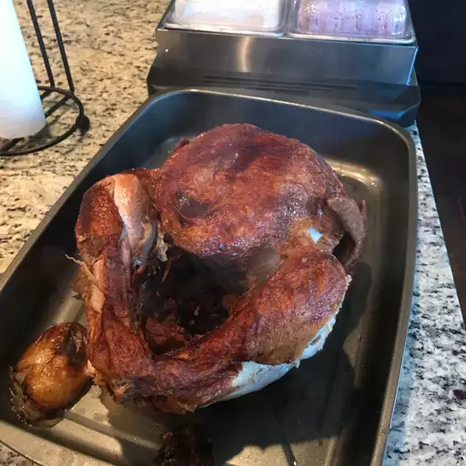

Deep-Fried Turkey

This is an awesome deep-fried turkey recipe made with Creole seasoning. The meat is crispy on the outside and super juicy on the inside — even the white meat! We use a 26-quart aluminum pot with a drain basket.
Ingredients
- 3 gallons oil
- 12 lb Whole Turkey
- 1/4 cup Creole Seasoning
- 1 Medium White Onion
Directoins
- Fill pot with oil
- Rinse turkey and pat dry
- Fry oil and put turkey in
- Cook for whenever bruh